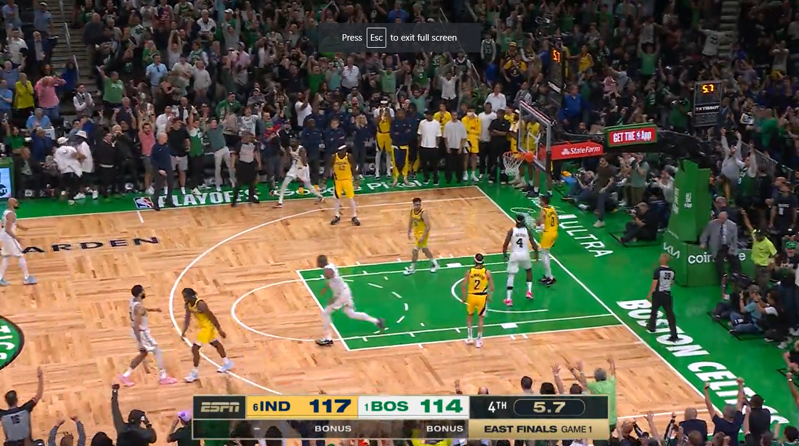

Full Stories
Caitlin Clark just did something no athlete has done since Michael Jordan
Breakout basketball star Caitlin Clark has a new achievement that hasn’t been accomplished since Michael Jordan.
The WNBA player signed a multiyear deal with Wilson Sporting Goods Co., the league’s official basketball supplier, for “signature basketball collections celebrating Clark’s continued legacy,” the company announced Tuesday.
Wilson said that Clark will “test, advise and provide feedback on a range” of its basketball products, become a brand ambassador and release new collections that celebrate her throughout the rest of 2024. In addition, she will “creatively direct her first-ever signature basketball line” that will roll out later this year. Financial terms of the deal were not released.
She’s the first-ever female athlete to have her own collection with Wilson, a company spokesperson told CNN, with the series being built similar to Jordan’s collection in the 1980s, which included signature basketballs.
“Wilson has been with me across some of the most pivotal moments in my career so far, and I couldn’t be more excited to continue driving basketball forward alongside them,” Clark said in a press release. “It feels surreal to have my own basketball collection, and to affect what that means for future generations of athletes.”
The first collection released Tuesday on Wilson’s website, with a limited collection of gold-colored basketballs featuring a drawing of Clark along with her signature.
Wilson, which has produced the basketballs for the NBA for several decades, became the official game ball of the WNBA in 2020. The company also sells basketballs with WNBA team logos on them.
Clark, the no. 1 draft pick, joined the Indiana Fever earlier this month and has been a boon for the league since: Her debut drew an average of 2.1 million viewers on ESPN2, ESPN+ and Disney+, making it the most watched WNBA game in more than two decades.
Nike is also reportedly on the verge of signing Clark to design her shoe line, but no official deal has been formally announced. She also has sponsorship deals with State Farm, Gatorade, Panini and others, valued at around $3 million.
Mother sues LaMelo Ball after he allegedly drove over 11-year-old son's foot and broke it at a fan event
A North Carolina mother has filed a lawsuit against Charlotte Hornets star LaMelo Ball and the team alleging that he ran over her 11-year-old son’s foot with his car at a fan event last fall, according to WSOC-TV.
Tamaira McRae was with her son, Angell Joseph, at a Hornets fan event at the Spectrum Center in October. As the event was ending, fans started going up to players as they left the arena and drove away.
Joseph, McRae said, went up to Ball and asked him for his autograph. “He was like, ’LaMelo I love you. I love you, sign my … give me your autograph. Can you sign it for me?’” she told WSCO-TV.
Ball didn’t sign anything for Joseph. instead "accelerated his vehicle forward suddenly" and ran over Joseph's foot and broke it." Further specifics on his injury aren't known, but McRae said the recovery process for both her and her son was incredibly difficult to deal with.
Their attorney, Cameron DeBrun, told WSOC-TV that they would have filed a claim with Ball’s insurance but the police report from the incident was missing key information. That’s part of what led them to the lawsuit. They also included the Hornets in the lawsuit, as the incident took place at their annual "Purple and Teal Day" event.
According to the lawsuit, per The Athletic, Ball was negligent while operating his vehicle "without maintaining proper control of it" and failing to "yield the right of way to a pedestrian" and to "apply his breaks in time to avoid an incident." The Hornets, the lawsuit said, didn't "provide adequate security and pedestrian control measures in the Spectrum Center employee exit" at their fan event. The lawsuit was filed on Tuesday in Mecklenburg County Superior Court.
Ball appeared in just 22 games for the Hornets last season, his fourth with the franchise, due to an ankle injury. He still averaged a career-high 23.9 points and eight assists per game. The 22-year-old will enter the first year of a five-year, $204 million contract extension with the team this fall.
Celtics steal Game 1 from Pacers, pass first real test in dramatic fashion: 'That s--- was chaos'
BOSTON — Everyone wanted to know how the Celtics would respond to their first real test of the NBA playoffs. Tuesday's Game 1 of the Eastern Conference finals ultimately provided the answer: Chaotically.
"That's a great word," said Boston's Jayson Tatum, "because that s*** was chaos. That s*** was wild."
Jaylen Brown's mad-dash 3-pointer with six seconds left in the fourth quarter sent the game to an extra period, and Tatum's back-to-back three-point plays in the final 75 seconds of overtime put a 133-128 win out of reach from the feisty Indiana Pacers. Yet somehow we are left to wonder if they are clutch or not.
This will be the sticking point on sports talk shows on Wednesday. Brown told himself something else.
“Before the inbounds, I was just talking to myself: ‘If I get this shot, it’s going in,’" said Brown, who posted a 26-7-5 in 44:25. "I was just telling myself the whole time, ‘If you get it, it’s going up, and it’s going in.’”
You are clutch if you are victorious, I guess, but there were plenty of times Boston felt anything but.
Brown's turnover with 4:39 remaining in regulation of a two-point game was Exhibit A. He telegraphed a pass that he threw directly to Pascal Siakam, whose dunk on the other end gave Indiana a 108-104 lead.
That malfunction was topped by Tatum's pass to no one with 1:48 left in overtime. When Pacers point guard Tyrese Haliburton corralled the careless turnover, Boston's Derrick White fouled him on a 3-point attempt in transition, gifting Indiana a trio of free throws. Haliburton made all three for a 123-121 lead.
"I'm so glad we won the game," said Tatum, "because I would've been sick." The only one who played with poise throughout the night, it seemed, was Boston's Jrue Holiday, who scored 20 of his season-high 28 points after halftime, adding eight assists, seven boards and three steals.
“Jrue came out and balled, man," said Brown. "He’s the reason why we won this game.”
There were more meltdowns. The Celtics coughed up a 13-point lead in the final minutes of the third quarter. Their fourth-quarter offense got stuck in a muddy mixture of isolation, 3-pointers and isolation 3-pointers. They flubbed the open threes they did manufacture — until Brown made his in Siakam's grill.
“We didn’t necessarily play well enough where we may have deserved to win," said Tatum, whose night netted game-highs of 36 points, 12 rebounds and a +20 rating. "JB gave us a second chance by hitting that shot, and we just talked about it in the huddle. ‘We’ve got a second chance. Let’s take advantage of it.’”
The Celtics had more lives than Kenny from "South Park," and Indiana granted most of them. With his team leading 117-114 inside of 30 seconds remaining in regulation, Haliburton inexplicably dribbled out of bounds. Rather than attempt a game-tying 3, White missed a layup, and Tatum missed the follow-up — a fadeaway jump shot — and again the Pacers had the ball, a three-point lead and the game in their hands.
And again they resuscitated Boston, throwing the ensuing inbounds pass off of Siakam's hands. Celtics ball. Eight seconds left. Holiday feeds Brown in the corner. "Bang!" yelped ESPN's Mike Breen. "Bang!" “Man, that was a tough shot," said Celtics veteran Al Horford. "A very tough shot.”
“It’s simple: Big-time players make big-time plays," added Tatum. "That was a hell of a shot.”
“This loss is totally on me," said Pacers coach Rick Carlisle, unprompted. "With 10 seconds in regulation, we should’ve just taken the timeout, advanced the ball, found a way to get in, made a free throw or two and ended the game, but it didn’t happen, and we made some other mistakes, but our guys just need to concentrate on fighting the way they fought in this game from start to finish, and we’ll be back Thursday.”
The Pacers were not without their positives, either. They rebounded from a 12-0 deficit in the opening minutes. Haliburton's last-second 35-footer tied the game at halftime, 64-64. He banked home another 3-pointer to draw Indiana within 94-93 at the third-quarter buzzer. The Pacers scored five times on six possessions in the first three minutes of crunch time, taking a 115-110 lead with two minutes left in the fourth quarter.
Then it all went to hell. Or elsewhere, depending on your perspective. “A lot of things had to go wrong for us and right for them," said Carlisle, "and they did.” Most of it from both teams was far from clutch. Some was extremely clutch. Did the Pacers fumble the bag? Did the Celtics pull one out of their you-know-whats? This game was all in the eye of the beholder.
And this beholder thinks this kind of performance will not be enough against whichever Western Conference opponent awaits in the NBA Finals. A better team would have extinguished Boston. Would have being the operative phrase. We have no idea what will happen next, as Tuesday made crystal clear.
What we do know: Boston has played 11 postseason games, won nine of them, and needs seven more to deliver the franchise's 18th championship. That was one hell of a basketball contest, the Celtics' first real test and one it passed — barely, but nobody will remember the grade we give them in this moment. We will just remember the chaos. As Brown said, "Welcome to the NBA playoffs."
‘Loss is totally on me’: Indiana Pacers head coach takes blame for Game 1 loss to Boston Celtics in Eastern Conference Finals
Indiana Pacers head coach Rick Carlisle said the 133-128 overtime loss to the Boston Celtics in Game 1 of the Eastern Conference Finals on Tuesday was “totally on me” after his team snatched defeat from the jaws of victory.
The Pacers had a three-point cushion and the ball with just 10 seconds left of regulation time, but Andrew Nembhard’s inbound pass to Pascal Siakam ended up in Indiana turning the ball over.
The costly mistake was punished by Jaylen Brown who leveled the scores at 117-117 with a three-pointer from the corner. The Celtics then got the better of overtime to take a series lead, leaving Carlisle to rue the missed opportunity.
“I love the way our guys fought in this game. This loss is totally on me. With 10 seconds of regulation, we should have just taken the timeout, advanced the ball and found a way to get it in,” Carlisle admitted to reporters after the game at Boston’s TD Garden.
“We made some other mistakes, but our guys just need to concentrate on fighting the way they fought in this game, from start to finish.”
Despite Carlisle taking responsibility for the chaotic end to regulation time, it was an error strewn night from the Pacers, who tallied 22 turnovers which led to 32 points for Boston, according to ESPN.
Carlisle, though, wanted to focus on the positives of which there were some. Boston, for example, had twice led by double digits in the game but Indiana came back on both occasions to take the lead.
The Pacers head coach was confident his team would recover in time for Game 2 on Thursday. “We did a lot of good things that we need to continue to do and we’ve been a tough minded, resilient team for almost the entire second half of the year and we have to continue that,” he added.
For the Celtics, it was a morale boosting start to the series, with Brown and Jayson Tatum leading the charge. Tatum finished on a game-high 36 points, coming up clutch in overtime after Brown had saved the day.
“Welcome to the NBA Playoffs,” Brown told reporters. “You’ve just got to manage your emotions of the game. Anything can happen. The game is not over until the final buzzer sounds.”
The Celtics were also boosted by a career-best performance from Jrue Holiday who totalled 28 points, seven rebounds, eight assists, and three steals. “We’ve seen crazy stuff happen all the time,” Holiday told reporters.
“I don’t think that we think we’ve lost a game until we’ve actually lost a game. That’s part of the reason why we were so resilient toward the end of the game; anything can happen.”